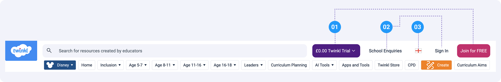
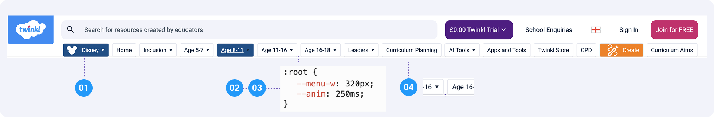
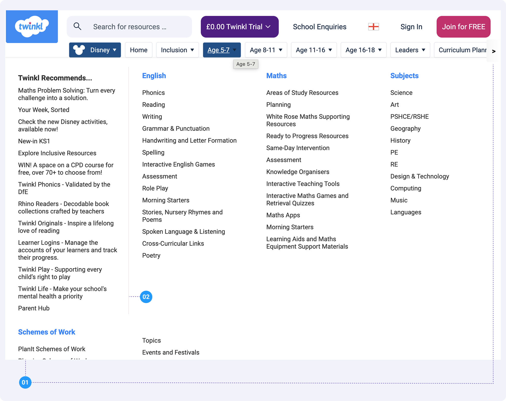

27th May 2026
Pain Points
Heuristic review of the current navigation across desktop and mobile
A heuristic review of the existing Twinkl navigation identified pain points across four areas: the header, navigation structure, mega menu, and mobile experience.
Header

Competing calls to action
The logo, a purple trial button, and a pink join button all sit within a 200px stretch of the header, each demanding the same click. Users are forced to evaluate three primary actions before they have even started browsing.
Utility links are visually dismissed
School Enquiries, the language selector, and Sign In are sandwiched between loud CTAs. They carry real user value but receive no visual hierarchy, making them easy to miss entirely.
Personalisation control has no label
The flag icon is the only affordance for what is actually a full personalisation control. Clicking it opens a modal to set Country, Region, Language, and Career, and the navigation structure changes based on those selections. The icon gives no indication of this scope, and without a text label the control has no accessible name, failing WCAG 1.1.1 and 2.4.6 at Level AA.
Navigation Structure

Mega Menu

Mobile
Mobile navigation
- The mobile nav is a horizontally scrolling strip with no scroll indicator or fade. Items such as Age 8–11 onwards are visibly truncated on the right with no affordance to suggest more exist.
- The Disney chip retains its prominent first position on mobile, appearing before Home and all age categories.
- The Join CTA sits in the header alongside Sign In and the flag, competing for attention in a constrained space.
- The flag-only language selector persists on mobile with the same accessibility issue as desktop, with no text label and no accessible name for screen readers.
- Nav items in the strip appear small and closely spaced, potentially falling below the 44×44px minimum touch target size recommended by WCAG 2.5.5.